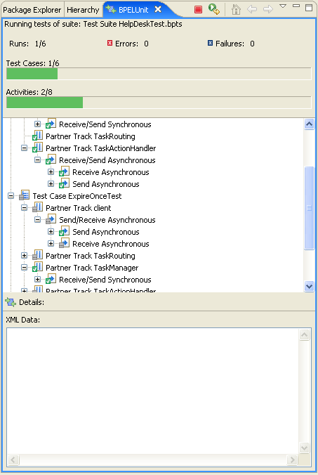

After a test suite has been launched, the Result View comes up, which displays information about the current test run. The view is updated as the test progresses. Depending on the current run, the view will look something like this:

The view contains two JUnit-like bars. The first bar shows the test case progress; the second bar shows the activity progress inside the current test case. As expected, the bar turns red and stays red if any failure or error occurs.
The tree view immediately below the bars displays the structure of the current test suite. Each top-level node represents a test case, which contains partners, which in turn contain activities. Initially, are nodes are displayed in gray, as they have not been executed yet. When executed, they will turn green in case of a successful execution, or red in case of a failure or error.
Each node may be selected to display more information about the node in the detail pane at the bottom of the view. For example, selecting a Send activity will yield information on where the data was sent:
Selecting an XML node beneath a Send or Receive activity displays the actual data that was sent:

The BPELUnit Result View also allows users to stop the test at any time (red stop button at the top), and re-launch the test (green/yellow re-run button at the top)